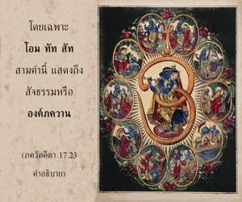
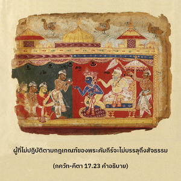
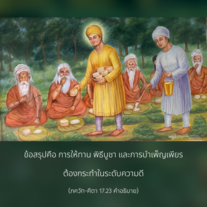

จากจุดเริ่มต้นแห่งการสร้างได้ใช้คำสามคำ โอํ ตตฺ สัท แสดงถึงสัจธรรมที่สมบูรณ์สูงสุด สามคำนี้เป็นสัญลักษณ์ตัวแทนที่พราหมณ์ใช้ขณะสวดภาวนาบทมนต์พระเวท และระหว่างพิธีบูชา เพื่อให้องค์ภควานฺทรงพอพระทัย



ได้อธิบายว่าการบำเพ็ญเพียร พิธีบูชา การให้ทาน และอาหาร แบ่งออกเป็นสามระดับ คือ ระดับความดี ตัณหา และอวิชชา ไม่ว่าจะเป็นชั้นหนึ่ง ชั้นสอง หรือชั้นสาม ทั้งหมดนั้นอยู่ในสภาวะที่มีมลทินด้วยระดับแห่งธรรมชาติวัตถุ แต่เมื่อมีจุดมุ่งหมายอยู่ที่องค์ภควานฺ โอํ ตตฺ สตฺ หรือบุคลิกภาพสูงสุดแห่งพระเจ้าผู้ทรงเป็นอมตะ สิ่งเหล่านี้กลายมาเป็นหนทางเพื่อความเจริญในวิถีทิพย์ ในคำสั่งสอนของพระคัมภีร์นั้นจุดมุ่งหมายนี้ได้แสดงไว้โดยเฉพาะ โอํ ตตฺ สตฺ สามคำนี้แสดงถึงสัจธรรม หรือองค์ภควานฺ เราจะพบคำว่า โอํ ในบทมนต์พระเวทเสมอ
ผู้ที่ไม่ปฏิบัติตามกฎเกณฑ์ของพระคัมภีร์จะไม่บรรลุถึงสัจธรรม เขาจะได้รับผลชั่วคราวแต่ไม่ใช่จุดมุ่งหมายสูงสุดของชีวิต ข้อสรุปคือ การให้ทาน พิธีบูชา และการบำเพ็ญเพียรต้องกระทำในระดับความดี หากทำในระดับตัณหา หรืออวิชชาแน่นอนว่าคุณภาพจะต่ำกว่า คำสามคำ โอํ ตตฺ สตฺ เปล่งออกมาร่วมกับพระนามอันศักดิ์สิทธิ์ขององค์ภควานฺ ตัวอย่างเช่น โอํ ตทฺ วิษฺโณห์ เมื่อใดที่บทมนต์พระเวท หรือพระนามอันศักดิ์สิทธิ์ถูกเปล่งออกมาจะรวมคำว่า โอํ เข้าไปด้วย ซึ่งวรรณกรรมพระเวทได้แสดงไว้ สามคำนี้นำมาจากบทมนต์พระเวท โอํ อิตฺยฺ เอตทฺ พฺรหฺมโณ เนทิษฺฐํ นาม (เวท) แสดงถึงจุดมุ่งหมายแรก จากนั้น ตตฺ ตฺวมฺ อสิ (ฉานฺโทคฺย อุปนิษทฺ 6.8.7) แสดงถึงจุดมุ่งหมายที่สองและ สทฺ เอว เสามฺย (ฉานฺโทคฺย อุปนิษทฺ 6.2.1) แสดงถึงจุดมุ่งหมายที่สาม เมื่อรวมกันกลายมาเป็น โอํ ตตฺ สตฺ ในอดีตเมื่อพระพรหมชีวิตแรกที่ถูกสร้างขึ้นมาทรงทำพิธีบูชา และทรงแสดงถึงบุคลิกภาพสูงสุดแห่งพระเจ้าด้วยสามคำนี้ ฉะนั้น หลักการเดียวกันนี้ ปรมฺปรา ปฏิบัติตามเสมอมา ดังนั้น บทมนต์นี้มีความสำคัญอันยิ่งใหญ่ ภควัท-คีตา แนะนำว่างานใดที่กระทำควรทำไปเพื่อ โอํ ตตฺ สตฺ หรือเพื่อบุคลิกภาพสูงสุดแห่งพระเจ้า เมื่อบำเพ็ญเพียร ให้ทาน และประกอบพิธีบูชาด้วยสามคำนี้เท่ากับปฏิบัติในกฺฤษฺณจิตสำนึก กฺฤษฺณจิตสำนึกเป็นการปฏิบัติเชิงวิทยาศาสตร์ในกิจกรรมทิพย์ ซึ่งสามารถนำเราให้กลับคืนสู่เหย้าคืนสู่องค์ภควานฺ การปฏิบัติในวิถีทิพย์เช่นนี้จะไม่มีการสูญเสียพลังงานไป